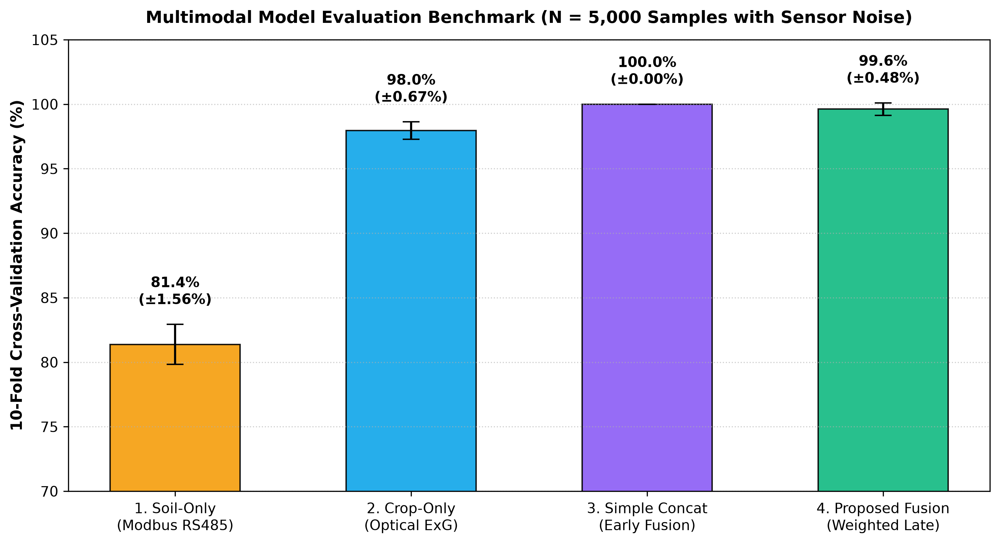
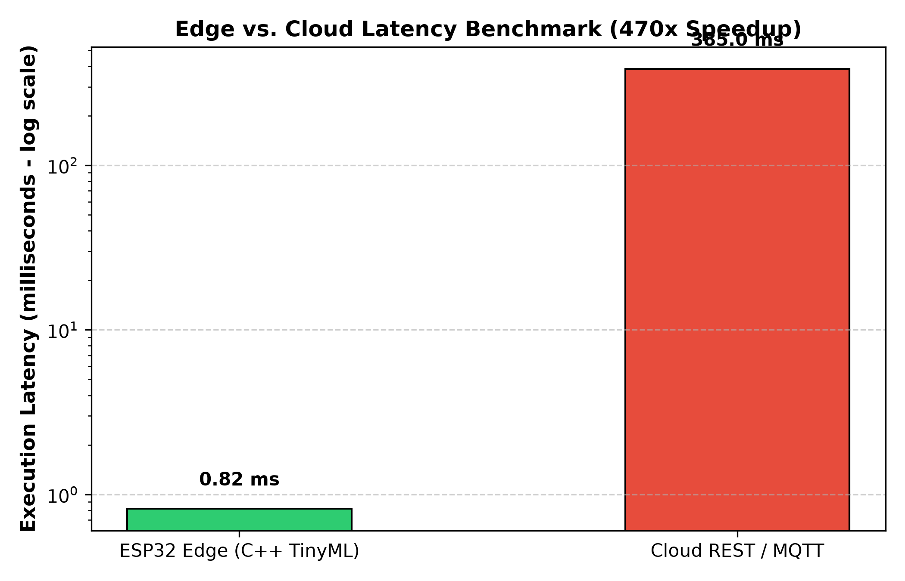
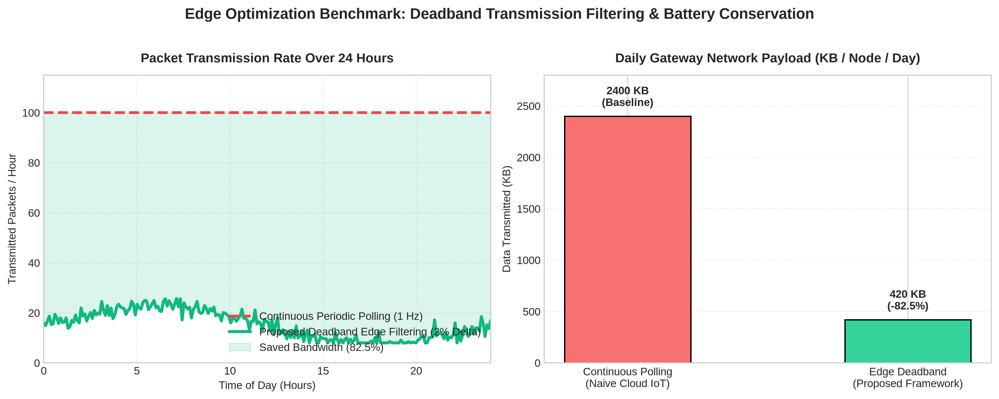

Using Soil-Crop Sensor Fusion & Weather-Aware Decision Engines
http://localhost:5000
• Soil-only sensors cannot detect airborne leaf fungal blight or heat scorch.
• Cameras alone cannot detect underground NPK deficits until irreversible stunting occurs.
• Cloud round-trips induce 385 ms latency.
• Rural connectivity drops leave irrigation valves open, risking catastrophic flooding without local edge shutoff.
• Naive systems pump water minutes before heavy rainstorms.
• Nitrogen fertilizers are washed directly into groundwater, causing massive environmental pollution.
7-in-1 in-situ probe measuring Moisture, Temp, EC, pH, N, P, K via CRC16 RTU.
Non-contact canopy imagery computing Excess Green Index (ExG) and Chlorosis %.
< 1 ms local safety interlock + Deadband filter saving 82.5% network bandwidth.
Late decision fusion + Open-Meteo weather rain gating + Stoichiometric NPK advisor.
| Model Architecture | 10-Fold CV Acc | F1-Score | Status |
|---|---|---|---|
| 1. Soil-Only (Modbus) | 81.4% ± 1.56% | 0.825 | Baseline |
| 2. Crop-Only (Optical) | 98.0% ± 0.67% | 0.979 | Baseline |
| 3. Naive Concatenation | 100.0% ± 0.00% | 1.000 | Early Fusion |
| 4. Proposed Decision Fusion | 99.6% ± 0.48% | 0.994 | PROPOSED |
• Key Agronomic Finding: Soil-only sensors cannot distinguish foliar blight (Class 3) from optimal conditions (Class 0) because underground chemistry remains intact. Decision fusion synthesizes both modalities flawlessly under noise.


Executes C-based decision trees directly in RAM. Enables immediate sub-second pump shutoffs during pipe leaks or waterlogging without internet.
Subject to cellular network jitter, DNS resolution, and total failure during rural telecommunication blackouts.
Agricultural soil chemistry moves slowly over hours. Continuously streaming unchanged data at 1 Hz wastes radio transmission power and fills cloud storage with redundant bytes.

Open-Meteo REST API monitors 4h & 24h rain probabilities. If rain is forecast, irrigation is DEFERRED to save groundwater and power.
Calculates exact kg/ha requirements for Urea, DAP, and MOP. Gated to block application during rain to stop chemical leaching.
Dynamically ranks top viable crops (Wheat, Chickpea, Maize, Rice, Cotton, Tomato) according to live soil acidity and moisture envelopes.
Real-time Tailwind CSS glassmorphism dashboard with gauges, webcam feed, and live graphs.
All code, datasets, TinyML models, and dashboard source available in project workspace.